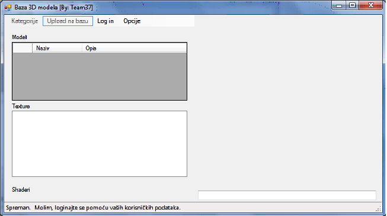
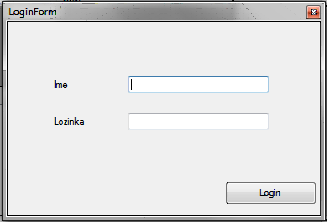
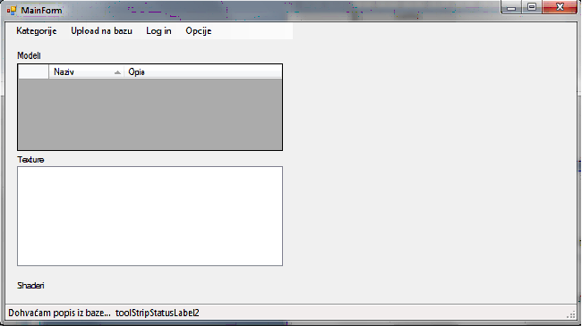

Pokretanjem aplikacije se otvara glavna forma, kako stoji u nastavku, na kojoj se nužno
treba prvo logirati da bi se ista mogla koristiti.

Klikom na „Log in“, otvara se forma u koju se unose korisnièko ime i lozinka.

U polje TextBox naziva „Ime“ se upisuje korisnièko ime, a u TextBox „Lozinka“ se upisuje
pripadajuæa lozinka, nakon èega se klikom na dugme „Login“ prijavljuje u sustav.
Ukoliko se prijavljujete prvi puta, ostvarivanje konekcije na bazu te dohvaæanje podataka
može potrajati nekoliko sekundi.
Odjava iz sustava se automatski vrši izlaskom iz aplikacije i/ili ponovnim klikom na „Log in“
bilo kada u toku rada sa aplikacijom (kada se ponovo zahtijeva unos korisnièkih podataka).
Nakon uspješne prijave u sustav se mogu koristiti ostale moguænosti koje aplikacije nudi. Iste
æe biti objašnjene u nastavku.

Uz opciju „Log in“, aplikacija nudi još tri „usluge“, a to su redom „Kategorije“, „Upload na
bazu“ i „Opcije“.